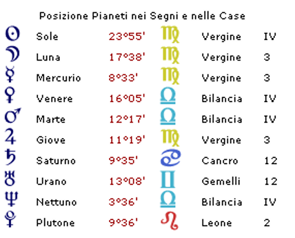
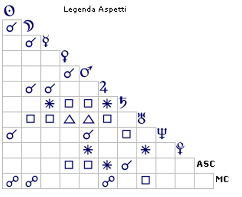

Biografie
Reinhold Messner
Villnös, 17 settembre 1944
Reinhold Messner nato il 17 Settembre 1944 alle ore 00:45 a Villnos
Vergine Asc Cancro


case
Scritto nelle Stelle, Scolpito nella Roccia — Il Destino Astrale di Reinhold Messner
Un primo sguardo al tema natale di Reinhold Messner — il più grande alpinista della storia, primo uomo ad aver scalato tutti i quattordici Ottomila — rivela una distribuzione planetaria fortemente concentrata nell'emisfero inferiore. Nel sistema morpurghiano, tale configurazione indica un profondo ancoraggio all'ambiente d'origine: una tendenza a costruire l'identità a partire dal territorio, dalla famiglia e dalle radici culturali. Molti dei pianeti presenti nel tema occupano la terza e la quarta casa, archetipicamente associate — rispettivamente — al mondo dei coetanei, dei fratelli e delle prime relazioni sociali, e al nucleo familiare nel senso più intimo e privato.
A prima vista, questa configurazione potrebbe sembrare in contraddizione con l'immagine di un uomo che ha trascorso la sua vita ai confini del possibile umano, sulle pareti più remote e selvagge del pianeta. Eppure, come spesso accade nell'indagine astrologica, la contraddizione apparente si rivela una tensione dinamica: è proprio dall'attrito tra il bisogno di radicamento e la spinta verso l'ignoto che si genera l'energia psicologica che ha alimentato le imprese di Messner.
Soltanto due pianeti abitano l'emisfero superiore del tema natale: Saturno e Urano, entrambi collocati in dodicesima casa. Questa posizione è di rilevanza eccezionale nell'architettura del tema. La dodicesima casa è la casa dell'indifferenziato, del trascendente, di ciò che non ha forma definita né confini riconoscibili — il dominio dell'ignoto per eccellenza. Per Messner, l'avventura al limite non è mai stata semplicemente un'attività sportiva: è stato un movimento esistenziale verso ciò che non può essere mappato, controllato o previsto.
La presenza di uno stellium — congiunzione multipla di pianeti — formato da Mercurio, Giove e Luna in Vergine, in terza casa, costituisce uno degli elementi più significativi e densi di implicazioni psicologiche dell'intero tema natale. A questi si aggiunge il Sole in Vergine, in quarta casa, che amplifica ulteriormente l'influenza del segno.
Sul piano psicologico e cognitivo, questa configurazione indica un'intelligenza analitica di straordinaria finezza, capace di elaborare grandi quantità di informazioni con rapidità e precisione. Mercurio in Vergine — il pianeta è nel suo segno di domicilio base — descrive una mente ordinata, metodica, attenta ai dettagli più minuti, che diffida dell'approssimazione e dell'improvvisazione. Giove amplifica questa capacità, portando una visione d'insieme che integra i dettagli in un quadro coerente. La Luna in Vergine, infine, radica il mondo emotivo di Messner in questa stessa attitudine: le sue emozioni trovano espressione e sicurezza attraverso la competenza, la preparazione e la padronanza tecnica.
Ma Messner non è solo logica pura. L' aspetto di sestile che Mercurio e Giove forma con Saturno in Cancro in dodicesima casa, descrive un soggetto dotato di una straordinaria logica intuitiva persino nelle situazioni più difficili e disorientanti, in cui la capacità di prendere decisioni rapide, basate su sensazioni viscerali, in alta quota fa la differenza tra la vita e la morte. È degno di nota che la Vergine sia tradizionalmente associata, in molte scuole astrologiche, al simbolismo della montagna: il terreno arido, scosceso, verticale, che esige tecnica e umiltà. Non è forse casuale che il segno dominante del tema natale di Messner sia proprio quello che più di ogni altro evoca il paesaggio che ha definito la sua esistenza.
Per comprendere le origini profonde della vocazione di Messner all'alpinismo estremo, è necessario esaminare alcune configurazioni planetarie specifiche, che consentono di formulare ipotesi psicodinamiche sulla struttura motivazionale del soggetto.
Prima Ipotesi — La Ricerca di Riconoscimento in Ambito Familiare
Questa configurazione suggerisce che le primissime esperienze di arrampicata di Messner — compiute in giovane età con il padre sulle Dolomiti — abbiano generato un feedback emotivo di grande intensità: la percezione di essere osservato, ammirato e riconosciuto per un'abilità naturale, tanto in ambito familiare quanto tra i coetanei. Il sestile di Saturno a Mercurio-Giove indica che tale riconoscimento assumeva un carattere di autorevolezza, non di mera ammirazione superficiale. Messner si sentiva, agli occhi della famiglia, non soltanto abile ma degno di rispetto. Questo gratificazione primaria ha probabilmente innescato un circolo virtuoso che lo ha spinto a ricercare, attraverso sfide sempre più impegnative, conferma e approfondimento di tale autostima.
Il sestile che Plutone in Leone (II casa) forma con Marte rinforza questa lettura: vi è nel tema un genuino piacere nell'essere riconosciuti e ammirati per ciò che si compie, un bisogno di visibilità che si traduce in impresa concreta e materialmente significativa.
Seconda Ipotesi — La Fuga dai Vincoli dell'Ambiente Domestico
Il quadrato tra Marte e Saturno è uno degli aspetti psicologicamente più complessi che un tema natale possa presentare. Nella sua espressione più tipica, indica un principio di azione — Marte — che si sente compresso, rallentato o limitato da norme, aspettative e doveri — Saturno — imposti dall'esterno. Nel tema di Messner, Marte si trova in quarta casa, vale a dire nell'ambito domestico e familiare, congiunto a Nettuno e Venere e tutti questi pianeti subiscono una quadratura da Saturno collocato nel segno del Cancro (famiglia): un Marte quindi che sogna di esprimersi liberamente, ma che nell'ambiente casalingo si trova soggetto a obblighi formali, a un ordine imposto, a regole che vincolano la sua energia espansiva (Marte è collocato nel segno della bilancia dove la forma, le regole ed il comportamento assumono grande importanza).
In questo contesto, la montagna diventa uno spazio psicologicamente necessario: il luogo in cui le regole familiari non hanno vigore, in cui il corpo e la volontà possono esprimersi nella loro pienezza, senza mediazioni o compromessi. La scalata è, almeno in parte, un atto di liberazione simbolica. Mercurio congiunto a Giove in terza casa — indica la presenza di numerosi fratelli — e suggerisce che l'ambiente domestico fosse popoloso e potenzialmente caotico: la montagna offriva a Messner uno spazio di solitudine scelto, di confronto diretto con sé stesso, lungi dall'affollamento familiare.
Terza Ipotesi — Lo Scorpione Intercettato: la Pulsione Inconscia verso la Sfida Vitale
Nel sistema morpurghiano, un segno intercettato — ovvero incluso per intero all'interno di una casa senza toccare le cuspidi — indica un'energia che sfugge al controllo consapevole del soggetto. Non è un'energia negata o repressa: è un'energia pulsionale, che agisce al di sotto della soglia della coscienza razionale, come un imperativo istintuale piuttosto che come una scelta riflessiva.
Lo Scorpione è il segno che governa archetipicamente la morte, la trasformazione radicale e la rinascita. Collocato in quinta casa — la casa della vitalità, della creatività e dell'espressione vitale per eccellenza — genera una dinamica di estrema potenza simbolica: il soggetto è inconsciamente attratto verso situazioni che mettono in gioco la vita, non per un impulso autodistruttivo, ma per sperimentare la pienezza della propria vitalità attraverso la confrontazione con il limite estremo. Ogni vetta conquistata è, a livello archetipico, una morte e una rinascita: il vecchio sé lasciato a valle, il nuovo sé che emerge alla sommità.
Plutone, governatore dello Scorpione, si trova in seconda casa — quella delle risorse materiali e del sostentamento. Questo posizionamento spiega come tale pulsione inconscia abbia trovato, nel corso del tempo, un'espressione anche economicamente sostenibile: Messner ha trasformato la sua vocazione esistenziale in una professione, costruendo attraverso di essa un'identità pubblica e una solida base materiale. L'alpinismo è diventato non soltanto una filosofia di vita, ma anche la fonte del suo sostentamento.
Le tre ipotesi psicodinamiche descritte non si escludono a vicenda: è verosimile che tutte e tre abbiano contribuito, in misura diversa e in momenti differenti della vita, a orientare Messner verso la sua scelta esistenziale.
La Tragedia del Nanga Parbat:
Il 27 giugno 1970, durante la discesa dal Nanga Parbat — la cosiddetta "Montagna Nuda", nona vetta del mondo per altitudine — Günther Messner, fratello minore di Reinhold, scomparve travolto da una valanga sul versante Diamir. La perdita di Günther segnò per Reinhold l'inizio di uno dei periodi più bui della sua esistenza: oltre al dolore inconsolabile per la morte del fratello, dovette affrontare per oltre tre decenni le pesanti accuse dei media e di altri alpinisti, che lo incolpavano di averlo abbandonato per raggiungere la vetta da solo. Fu soltanto nel 2005, con il ritrovamento dei resti di Günther sul versante Diamir — esattamente dove Messner aveva sempre affermato che si fosse svolta la tragedia — che la sua versione dei fatti venne definitivamente confermata.
Il tema natale di Messner descrive questa tragedia con una precisione che lascia senza parole.
La simbologia del fratello viene ripetuta con insistenza quasi ossessiva nel tema: il segno dei Gemelli (fratelli) è occupato da Urano leso (incidenti), la terza casa (casa dei fratelli per eccellenza nel linguaggio astrologico) è occupata da Mercurio (fratello), e da Giove e Luna, tutti e tre afflitti da Urano in dodicesima casa (incidente che può essere mortale).
Ma ciò che rende questa configurazione particolarmente straziante dal punto di vista psicologico è che il quadrato di Urano coinvolge anche la Luna e il Sole: l'intera personalità di Messner — la sua dimensione emotiva e interiore (Luna) così come la sua identità consapevole e la vitalità (Sole) — è stata irrimediabilmente segnata da quell'evento. Non vi è aspetto della sua persona che non ne porti il segno. La montagna che era stata teatro di conquista e libertà si è trasformata in luogo di lutto e di un'accusa ingiusta durata decenni.
È infine significativo che in questa configurazione sia presente anche il simbolismo della Vergine — segno tradizionalmente associato alla montagna — a ricordare che quella tragedia si è consumata proprio sulle pareti che Messner aveva scelto come spazio di espressione della propria identità più profonda.
Reinhold Messner ha sempre rifiutato la definizione di "sportivo". Nelle sue dichiarazioni pubbliche — e in una vasta produzione letteraria che conta decine di libri — ha ripetutamente affermato che l'alpinismo, nella forma in cui egli lo ha praticato, è un'azione estetica e creativa: la tracciatura di una linea ideale sulla parete, seguita con eleganza e rispetto per la forma della montagna.
La collocazione di Marte — il pianeta dell'azione fisica, dell'energia muscolare e della volontà — in posizione mediana tra Nettuno (il pianeta dell'intuizione, del sogno e dell'arte) e Venere (il pianeta della bellezza, dell'armonia e della forma estetica) è di una coerenza simbolica straordinaria. La Bilancia, segno in cui questa congiunzione si sviluppa, è un segno associato alle arti grafiche, al senso del proporzionato e dell'elegante, alla capacità di trovare l'equilibrio tra forze opposte.
Questa configurazione descrive con precisione il gesto alpinistico di Messner: non la conquista bruta della vetta per la via più diretta, ma la ricerca di una traiettoria che sia al tempo stesso efficace e bella, funzionale e armoniosa. La linea che Messner traccia con la mente sulla parete prima di salire — e che poi percorre con il corpo — è un'opera d'arte effimera, visibile soltanto a chi la compie. Il corpo come strumento artistico, la montagna come superficie creativa.
Nonostante i record mondiali, la fama internazionale e una vita trascorsa su palcoscenici globali, Reinhold Messner non si è mai allontanato — né geograficamente né psicologicamente — dalla sua terra d'origine. Si definisce un contadino: coltiva la propria terra, alleva animali, promuove un'economia montana basata sull'autosufficienza e sul rispetto per l'ecosistema alpino. I suoi musei — il Messner Mountain Museum, distribuito su sei siti nelle Dolomiti e in Alto Adige — non sono semplici istituzioni culturali: sono un atto di restituzione, un modo di mettere la propria visibilità al servizio della montagna e delle popolazioni che la abitano.
Tutto ciò è perfettamente coerente con quanto il tema natale afferma sin dalla prima analisi: la concentrazione di pianeti nell'emisfero inferiore indica un'identità che non si separa dalle proprie radici, ma le porta con sé ovunque vada. Lo stellium in Vergine — Mercurio, Giove, Luna, Sole — racconta in quattro movimenti il rapporto di Messner con la montagna: la montagna è oggetto di studio, di analisi, di conoscenza meticolosa (Mercurio), la montagna è fonte di un piacere espansivo e autentico, una gioia che non ha bisogno di giustificazioni (Giove), è lassù che Messner trova appagamento interiore, serenità, quella sensazione di essere esattamente dove deve essere (Luna), la montagna non è qualcosa che Messner fa, è qualcosa che Messner è. Togliergli la montagna significherebbe togliergli il centro stesso della propria identità (Sole). L'astrologia morpurghiana, nella sua vocazione ad essere uno strumento di conoscenza psicologica prima che divinatorio, ci restituisce in questo caso un ritratto dell'uomo che ha scalato il mondo senza mai smettere di essere un figlio delle sue montagne.